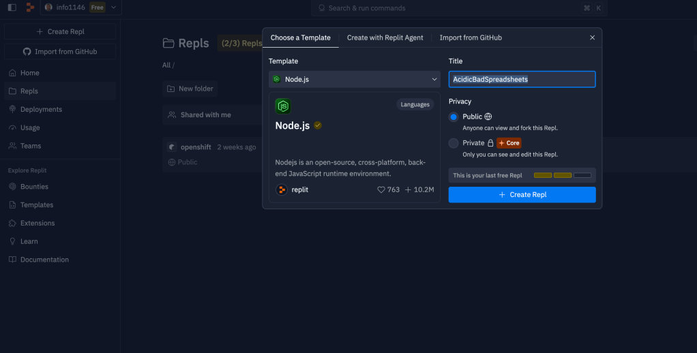
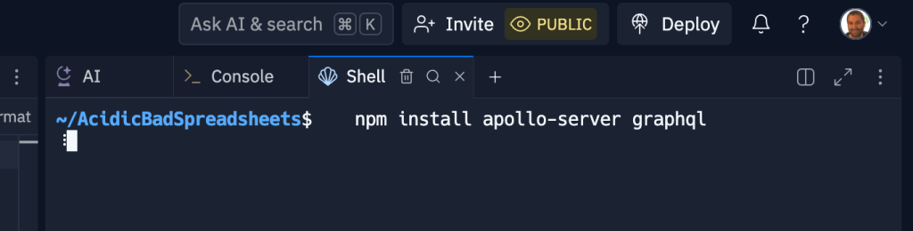
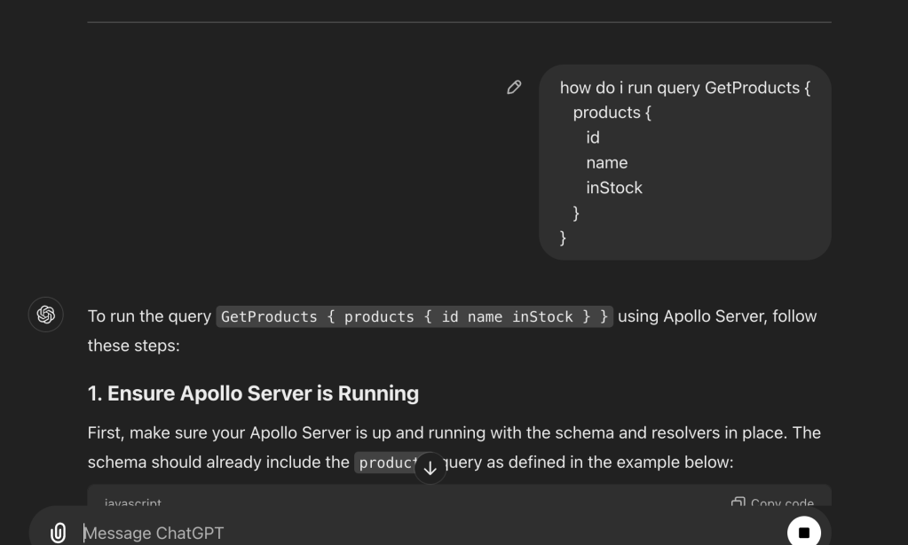
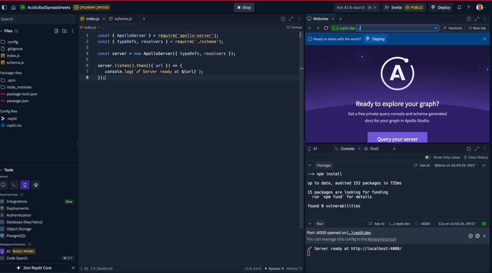
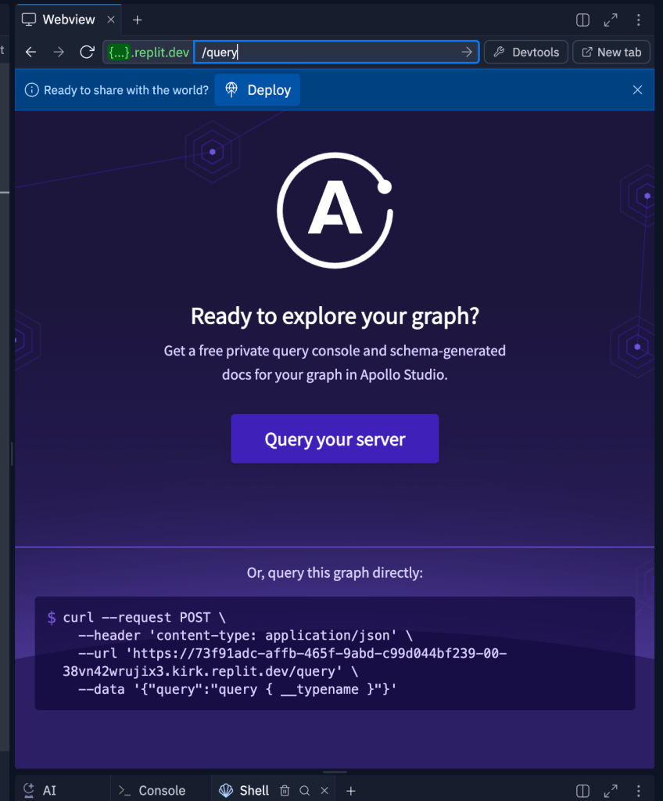
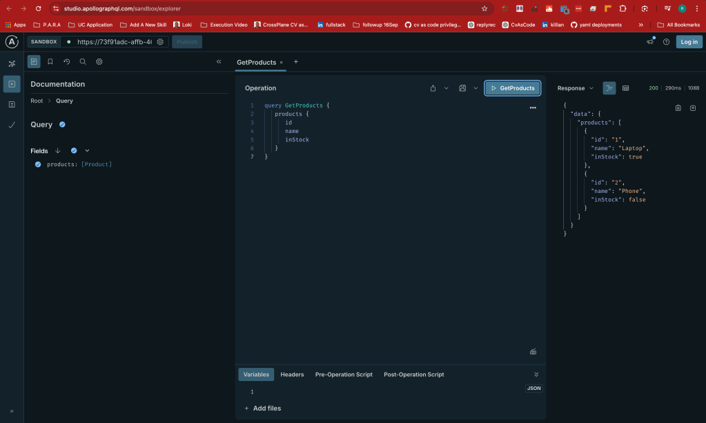

Preparing for Your Apollo GraphQL Exercise 🚀
💡 What I Want to Achieve: Proof of Concept / Interview Prep for Apollo GraphQL
Are you gearing up for an interview with Apollo GraphQL? Here's a step-by-step guide to help you approach the interview with confidence and nail it!
1. Understand Apollo GraphQL
-
🚀 Research Apollo: Take time to learn about Apollo’s mission, values, and what makes them a leader in GraphQL solutions. Apollo Studio, their open-source contributions, and their dominance in the market with over 4 million weekly downloads are good starting points.
-
🔎 GraphQL Knowledge: Make sure you understand the benefits of GraphQL over REST APIs and explore Apollo’s tools like Apollo Client and Apollo Server, which are key to their offering.
2. Review Your Experience with Java and API Infrastructure
-
💻 Java Proficiency: Reflect on your experience using Java, particularly in API development and infrastructure. Be prepared to discuss how you’ve built, optimized, or designed APIs to solve specific challenges.
-
📊 GraphQL Expertise: If you’ve worked with GraphQL or Apollo before, this is your chance to shine! If not, research how your experience in API design can be an asset as you transition into a GraphQL-first mindset.
3. Focus on Consulting Role Skills
-
🤝 Client-Facing Experience: The Senior Professional Services Engineer role involves consulting with enterprise clients. Highlight your experience working with large teams, solving problems, and guiding clients through technical decisions.
-
💡 Influencing Decisions: Have examples ready where you’ve influenced a technical team’s choice of tooling or design. This could be in API design, development processes, or infrastructure.
4. Prepare for Behavioral Questions
- 🌟 Be ready for questions about how you’ve solved complex problems under pressure, worked collaboratively with teams, and managed client expectations. Think about times when you’ve mentored or led teams.
5. Prepare to Discuss Your Career Growth
- 🚀 Be clear about your career journey, where you are now, and how this opportunity fits into your long-term goals. Show that you see this as a step in your career development and how Apollo can benefit from your skills.
6. Questions to Ask
-
🔧 What are the biggest challenges enterprise clients face when adopting GraphQL?
-
🏢 What is the team structure like? How do consultants collaborate with Apollo’s internal teams?
-
📈 What opportunities are available for career growth within Apollo?
🚀 Proof of Concept (PoC) for Adopting GraphQL
Adopting GraphQL can be a game-changer for your API architecture, offering flexibility, efficiency, and improved performance for your data retrieval processes. Here's a guide to help you create a Proof of Concept (PoC) that demonstrates the value of GraphQL in your environment.
Objective
💡 The goal of this PoC is to prove the viability of GraphQL for handling dynamic data queries in your application, showcasing its advantages over traditional REST APIs.
Step 1: Define the Use Case
🎯 Identify a feature or section of your application where data is complex or frequently queried, such as:
-
A product listing with multiple filters (e.g., price, category, availability).
-
User profiles with various related entities (e.g., posts, comments, likes).
-
Real-time data that could benefit from subscriptions (e.g., chat, notifications).
This use case will serve as the testing ground for your PoC.
Step 2: Set Up Apollo Server
🚀 Start by setting up an Apollo Server as your GraphQL backend. If you’re already using Node.js, Apollo Server can be integrated easily.

- Install Apollo Server:
npm install apollo-server graphql

- Create a Simple Schema:
Create aschema.jsfile that defines the GraphQL schema for your use case.
const { gql } = require('apollo-server');
const typeDefs = gql`
type Product {
id: ID!
name: String!
price: Float!
inStock: Boolean!
}
type Query {
products: [Product]
}
`;
const resolvers = {
Query: {
products: () => [
{ id: 1, name: 'Laptop', price: 999.99, inStock: true },
{ id: 2, name: 'Phone', price: 799.99, inStock: false }
]
}
module.exports = { typeDefs, resolvers };
- Launch Apollo Server:
In your mainindex.jsfile, import the schema and start the server:
const { ApolloServer } = require('apollo-server');
const { typeDefs, resolvers } = require('./schema');
const server = new ApolloServer({ typeDefs, resolvers });
server.listen().then(({ url }) => {
console.log(🚀 Server ready at ${url});

Run and webview opened up in Replit

Query Server

Step 3: Create a GraphQL Query
🔎 Now, create a simple query in GraphQL Playground to fetch only the data you need. Unlike REST, where you might get unnecessary fields, GraphQL lets you specify exactly what you want:
query GetProducts {
products {
id
name
inStock
}
}
This shows GraphQL's power of selecting only relevant data, reducing over-fetching and under-fetching.

Step 4: Compare with REST
🌍 Set up a REST endpoint for the same data and observe the difference:
-
REST:
/api/productsreturns all product data, including unused fields (e.g.,pricewhen it's not needed). -
GraphQL: The same query retrieves only the necessary fields (
id,name,inStock), optimizing the response size.
This comparison highlights GraphQL's efficiency in handling large, complex datasets by allowing clients to request only what’s needed.
Step 5: Show Advanced GraphQL Features
💼 To demonstrate GraphQL’s advanced features in your PoC, you can include:
-
Filtering and Sorting: Add arguments to your
productsquery to filter or sort results based on price or availability. -
Pagination: Implement pagination using GraphQL’s built-in features like
limitandoffset. -
Subscriptions: For real-time updates, implement GraphQL subscriptions that notify clients about changes in data (e.g., stock availability).
Step 6: Monitor Performance & Benefits
📊 Measure the performance impact of GraphQL compared to REST, such as:
-
Reduced API calls: Consolidate multiple REST calls into a single GraphQL query.
-
Response time: GraphQL allows you to minimize response payloads, improving performance, especially on mobile devices or slower networks.
-
Development speed: Show how GraphQL reduces backend complexity and accelerates front-end development by providing flexible, dynamic queries.
Step 7: Present the PoC
📢 Present your PoC by demonstrating the GraphQL queries, showcasing the reduced payload, and highlighting the potential performance benefits. Be sure to address:
-
Client-side integration: Use Apollo Client to show how easily the front-end can interact with the new GraphQL API.
-
Scalability: Discuss how GraphQL’s flexibility can handle future feature expansions.
Conclusion
💡 Your PoC should demonstrate that adopting GraphQL can bring tangible benefits, such as faster response times, reduced API maintenance, and enhanced developer productivity. This proof of concept will showcase how GraphQL aligns with your team’s objectives for improving API performance and user experience.
🔗 Further Resources:
🚀 Ready to Adopt GraphQL? Let’s Connect:
-
💼 LinkedIn: https://www.linkedin.com/in/rifaterdemsahin/
-
🐦 Twitter: https://x.com/rifaterdemsahin
-
🎥 YouTube: https://www.youtube.com/@RifatErdemSahin
-
💻 GitHub: https://github.com/rifaterdemsahin
This step-by-step guide will help you create a solid proof of concept to showcase the power of GraphQL in your organization. Happy coding! ✨
Imported from rifaterdemsahin.com · 2025